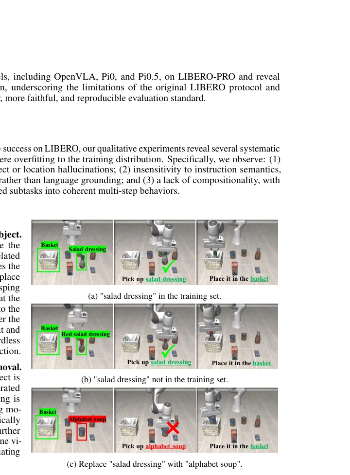
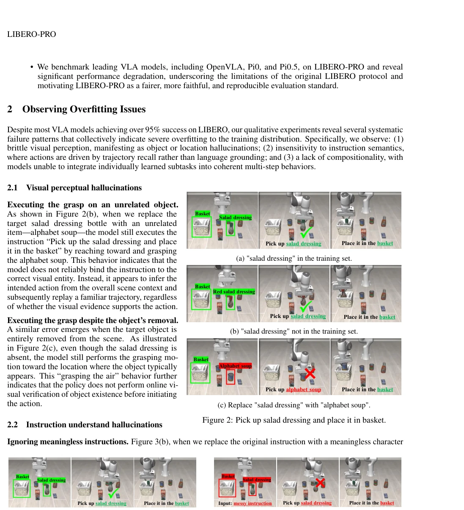
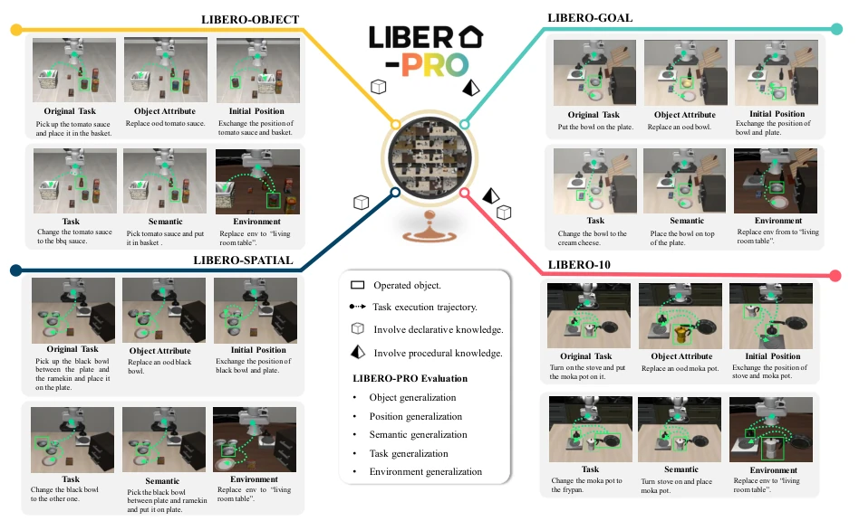
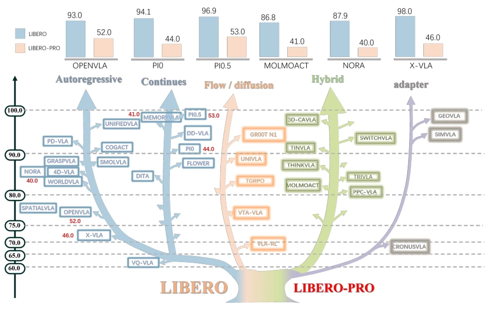
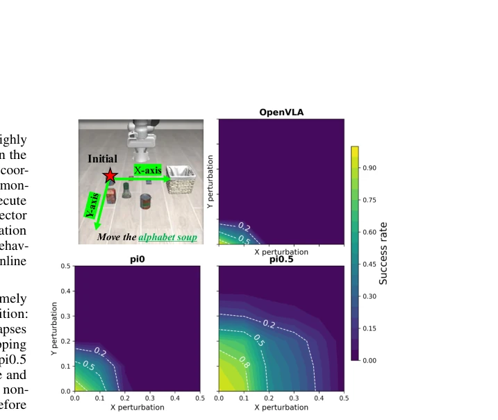
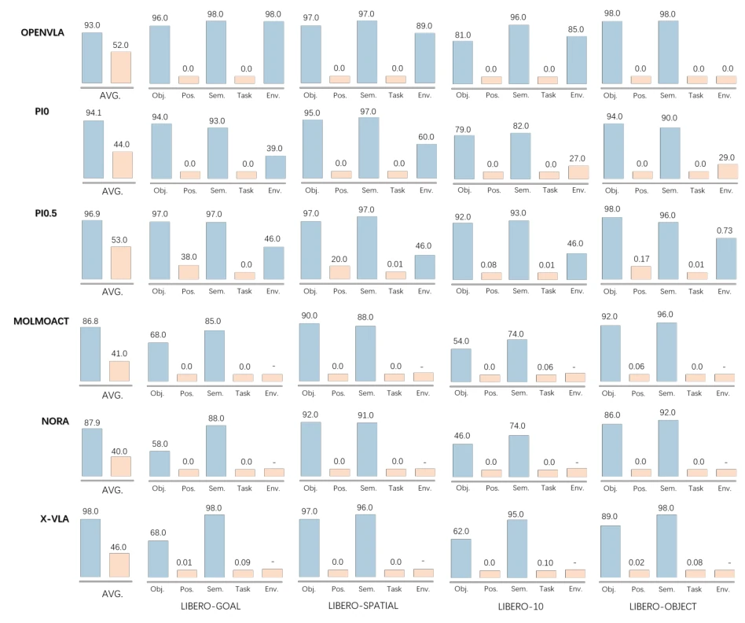

This paper ruthlessly tears apart the "Emperor's New Clothes" in the current VLA field. As the de facto standard benchmark, LIBERO enabled models like OpenVLA and Pi0 to achieve 90%+ accuracy, making embodied intelligence seem within reach. However, the authors point out incisively that this is merely the models "memorizing the question bank"—remembering object positions, action sequences, and even background textures in the training set, rather than truly understanding the tasks. The proposal of LIBERO-PRO is like giving these "top students" a test where open-book becomes closed-book, or even changing the questions on the exam paper, resulting in the models collectively failing the "naked exam," with accuracy dropping directly to zero. The highlight lies in its systematic revelation of the models' fragility towards instructions, objects, and environments, while the critique point lies in exposing the current community's blind confidence in "generalization ability," as many so-called SOTA are actually products of overfitting. Although benchmark extension itself does not produce new algorithms, its value as a "magic mirror" far exceeds the algorithms themselves, forcing the community to face the false prosperity of the evaluation system.
The research motivation points directly to the fatal flaw in the current VLA evaluation system. The existing LIBERO benchmark [13] has high overlap between training and testing tasks, with only minor initial state perturbations, causing models to easily complete tasks by memorizing visual patterns in the training distribution (such as object positions, scene layouts) rather than semantic understanding. As shown in Figure 2 and Figure 3, when target objects are replaced or instructions become garbled, models still mechanically execute original actions, exposing severe "hallucination" and overfitting problems. This evaluation method cannot distinguish whether models have truly mastered task logic or are merely "rote memorizing" demonstration trajectories. Although existing work [3, 11] has noticed generalization boundary issues, it lacks a systematic evaluation framework. LIBERO-PRO aims to force models to demonstrate real perception and reasoning capabilities through multi-dimensional perturbations (objects, states, instructions, environments), rather than interpolating within narrow distributions. This is crucial for promoting embodied intelligence from "laboratory performances" to "real-world applications," otherwise we are merely training a group of robots that can only parrot.

Figure 2: Pick up salad dressing and place it in basket.

Figure 3: Pick up salad dressing and place it in basket.
LIBERO-PRO constructs a perturbation-based evaluation framework, the core of which lies in generating controlled variant tasks on four orthogonal dimensions. The overall process maps standard task T to perturbed task T(k), where k represents the perturbation type. Specific modules include: 1) Object Attribute Perturbation: modifying color, texture, or size, maintaining semantic equivalence; 2) Initial Configuration Perturbation: changing absolute or relative object positions, simulating spatial generalization; 3) Instruction Perturbation: including semantic rewriting (paraphrasing) and structural changes, testing language grounding; 4) Environment Perturbation: replacing background, lighting, and other visual contexts. To ensure tasks are executable and meaningful, the method imposes two types of constraints: one is the perturbation amplitude limit within dimensions (dist ≤ δk), and the other is the total variation distance separation between tasks (dTV > ϵ). As shown in Figure 6, except for task-level perturbations, other types can be freely combined to form complex evaluation scenarios. This framework does not change the model architecture but acts as a "plugin" integrated into existing evaluation processes, objectively measuring robustness by quantifying the success rate decline curve of models under different perturbation intensities.

Figure 6: Overview of LIBERO-PRO. LIBERO-PRO extends LIBERO with five perturbation types: object, config- uration, instruction, task, and environment. These perturbations vary object attributes, object placements, language descriptions, task goals/object sets, and visual context, respectively, enabling systematic evaluation under diverse distribution shifts. To ensure feasibility, task perturbations are excluded from cross-type combinations, while the other perturbation types can be freely composed.
Experiments evaluated three mainstream models, OpenVLA [8], Pi0 [1], and Pi0.5 [6], on the LIBERO-PRO benchmark. The dataset follows the LIBERO task set but applies the aforementioned perturbations. The evaluation metric is task success rate (Success Rate). Main results show that although models performed excellently on standard LIBERO (>90%), performance collapsed under LIBERO-PRO. As shown in Figure 1 and Figure 7, success rate drops to zero when position perturbation exceeds 0.2 units; when objects are replaced or instructions are garbled, models still execute incorrect actions. Although Pi0.5 maintained a weak performance of 0.38 under position perturbation, it overall still failed the test. Ablation analysis indicates that models are most sensitive to spatial positions, and robustness to instruction semantics is also extremely poor. This finding confirms that existing VLA models lack true compositional reasoning, and their high accuracy mainly stems from overfitting to the training distribution, rather than generalization ability.

Figure 1: VLA models evaluated on LIBERO can be broadly grouped into five families according to their action decoding strategies: autoregressive, continuous, flow/diffusion, hybrid, and adapter-based methods. Although these different paradigms all achieve over 70% performance on LIBERO, their performance drops substantially on the more challenging LIBERO-PRO benchmark. This suggests that, despite strong results on LIBERO, current VLA models still suffer from limited robustness and generalization under more demanding evaluation settings.

Figure 4: Success rates of OpenVLA, pi0, and pi0.5 under object position perturbations.

Figure 7: Main results on LIBERO-PRO. Despite high average success on standard LIBERO tasks, current VLA models fail sharply under controlled perturbations, particularly position and task shifts. Robustness to object, semantic instruction, and environment changes is limited and varies across models and task suites.